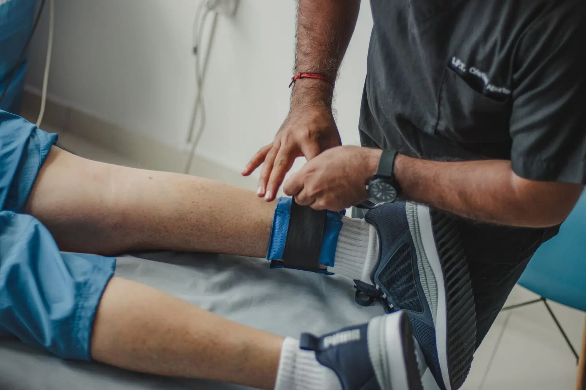
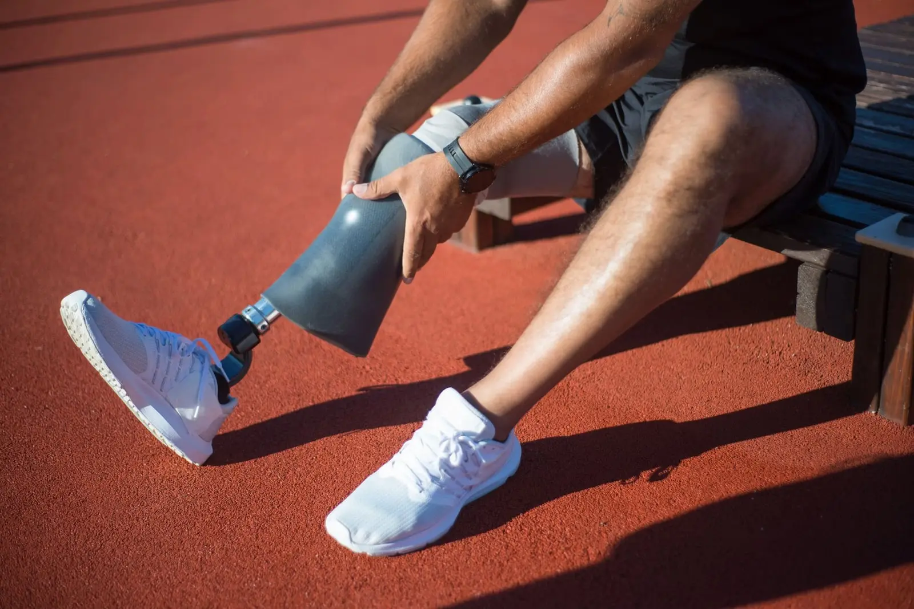
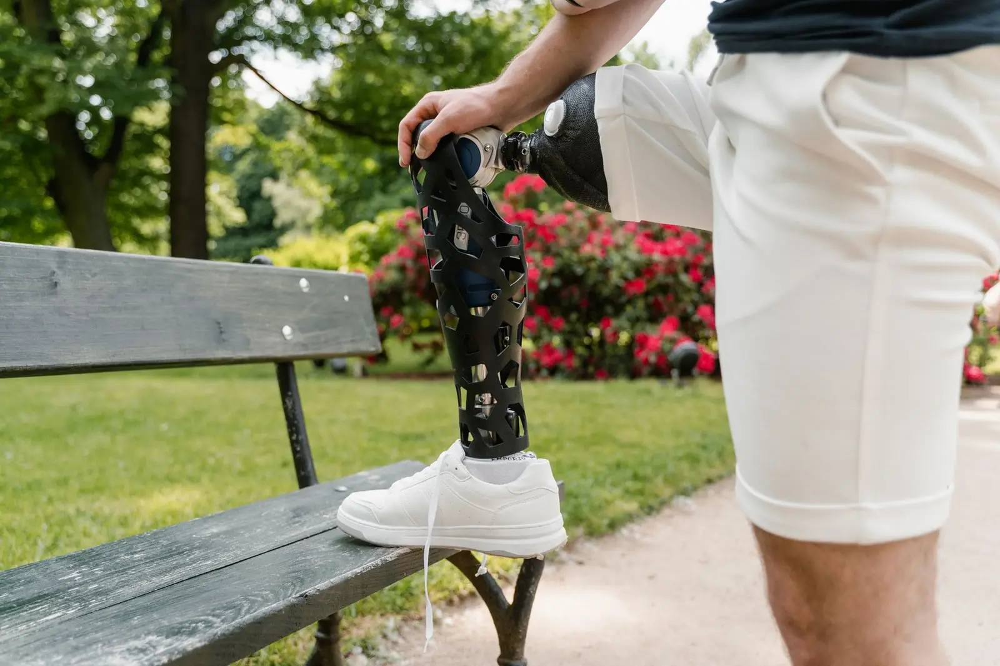
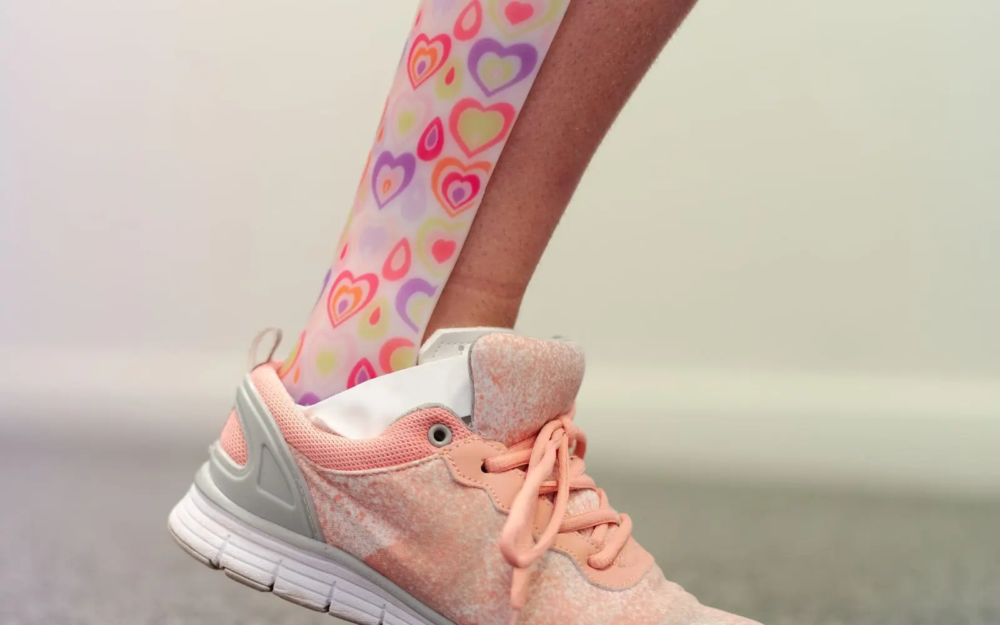

What to Expect at Your First Prosthetic Leg Fitting
A simple, step-by-step look at what happens from your first assessment to the day you walk out on your new leg.

If you’ve been told you need a leg brace, you may have heard the letters AFO, KAFO or HKAFO. They sound technical, but the idea is simple. The letters tell you which joints the brace covers.
So an AFO is an ankle foot orthosis. A KAFO adds the knee. An HKAFO adds the hip. Let’s look at each one.
An AFO is the most common leg brace. It starts under your foot, goes up the back of your calf and stops just below the knee. It usually fits inside your shoe.
What it does: It controls the foot and ankle. It can hold the foot up, stop the ankle from rolling, or keep the ankle at a good angle while you walk.
Who it helps:
Types of AFO: Solid AFOs hold the ankle still. Hinged AFOs have an ankle joint so you can bend your ankle. Flexible “leaf spring” AFOs lift the foot but allow more natural movement.
A KAFO is longer. It goes from your foot up past your knee to your thigh. It has joints at the knee so you can bend your leg to sit down.
What it does: It supports a knee that’s weak or unstable. Without it, the knee might buckle when you put weight on it, or bend backwards too far.
Who it helps:
Many KAFOs have knee joints that lock straight while you walk and unlock when you want to sit. Some newer joints only lock when you put weight through the leg, which makes walking smoother.
An HKAFO goes all the way up to the hip. It may connect to a band around the waist or to a trunk support.
What it does: It supports the hip, knee, ankle and foot all at once.
Who it helps:
HKAFOs help people stand and, in some cases, walk with crutches or a walker. They’re more involved to put on, so we spend extra time on training.
| AFO | KAFO | HKAFO | |
|---|---|---|---|
| Covers | Foot and ankle | Foot, ankle and knee | Foot, ankle, knee and hip |
| Length | Up to below the knee | Up to the thigh | Up to the hip or waist |
| Main job | Control the ankle | Support a weak knee | Support hips and legs |
| Common for | Foot drop, stroke, CP | Polio, weak knee | Spinal cord injury, spina bifida |
You don’t have to work this out alone. Your doctor or physiotherapist may suggest a type, and an orthotist will check you to confirm it. We look at:
Sometimes the answer surprises people. For example, a weak knee can sometimes be helped by a special AFO, without needing a full KAFO. That’s why a proper assessment matters.
The best brace is the lightest, simplest one that does the job safely. More brace isn’t always better.
To learn about the braces we make, see AFO, KAFO and HKAFO braces. For children, read leg braces for children: a simple guide for parents.
This article is general information, not medical advice. Please speak to your doctor or our team about your own situation.
Often, yes. Most braces used for foot drop are AFOs. But not every AFO is for foot drop. Some are used to control a weak or unstable ankle or to stretch tight calf muscles.
Sometimes. If your knee gets stronger, your orthotist may suggest moving to an AFO. This depends on your condition, so it needs a proper check first.

A simple, step-by-step look at what happens from your first assessment to the day you walk out on your new leg.

Some soreness is normal at first. Real pain isn't. Here's how to tell the difference and stay comfortable in your new leg.

Why children wear braces, what the fitting is like and practical tips to help your child get used to their new AFO.
Our team is happy to help. Call us or book an assessment in Rawalpindi.